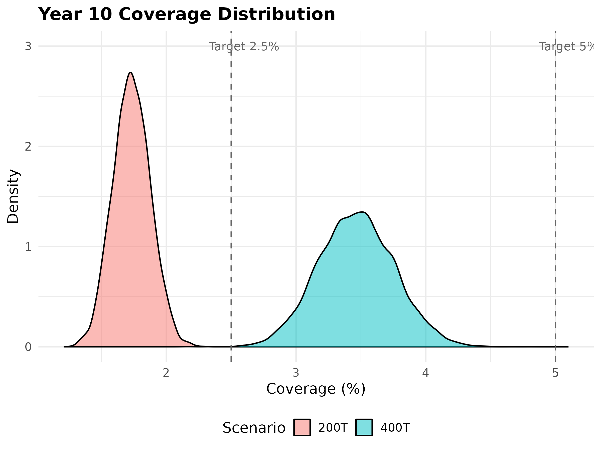
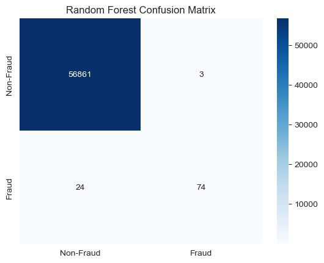
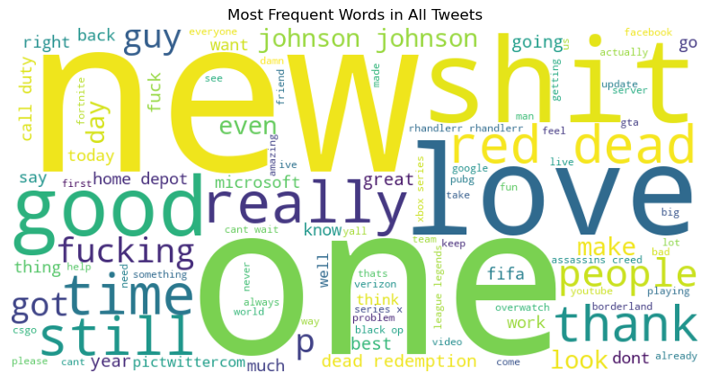
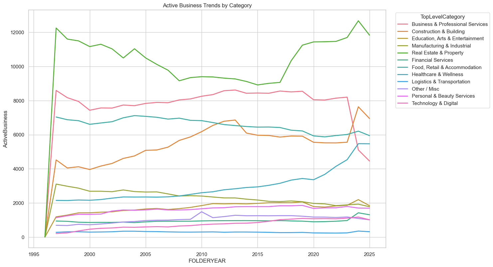
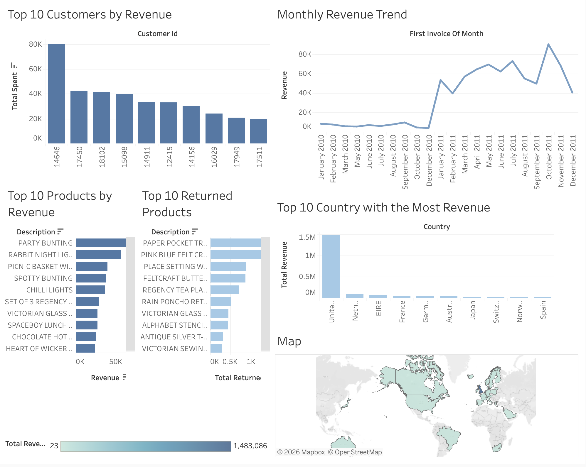
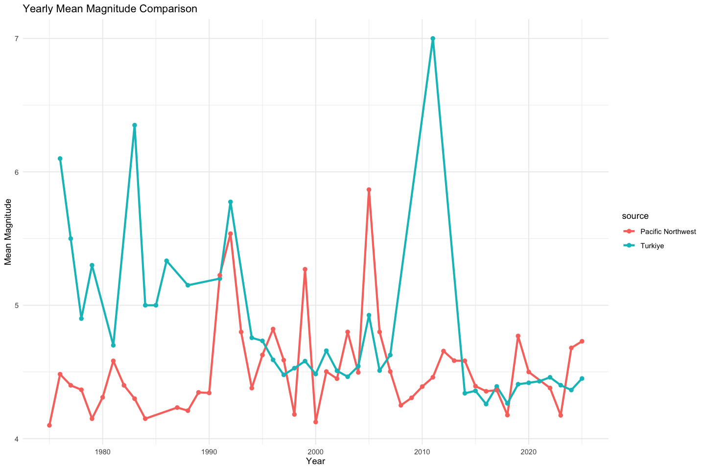

Monte Carlo MBG Fund
Simulated the sustainability of the Indonesian MBG Fund using Monte Carlo methods, quantifying the probability of funding a portion of the program over 10 years under uncertain yields and inflation.

Statistics | Data Science | Machine Learning

I am a Statistics student, with a strong focus on data science, analytics, and applied statistical modeling. I specialize in designing end-to-end data pipelines, predictive models, and actionable insights, and I have experience in machine learning, natural language processing (NLP), Monte Carlo simulations, time-series forecasting, and data visualization. I am passionate about transforming complex data into clear, data-driven stories to support decision-making, policy development, and real-world problem solving.
Download ResumeSimulated the sustainability of the Indonesian MBG Fund using Monte Carlo methods, quantifying the probability of funding a portion of the program over 10 years under uncertain yields and inflation.

Built a machine learning model to detect fraudulent transactions with high precision and recall, identifying key transaction patterns.

This project analyzes public sentiment toward multiple brands and games using Twitter data.

Developed predictive models for business performance forecasting; awarded 1st place in the Dataquest Competition. Contributed to time-series modeling, data cleaning, and visualization.

Explored customer behavior and purchasing patterns, generating actionable insights for marketing and inventory management.

Analyzed seismic data from Türkiye to identify statistical relationships among earthquake parameters, including magnitude and depth, and assess transferability of patterns to Pacific Northwest.
